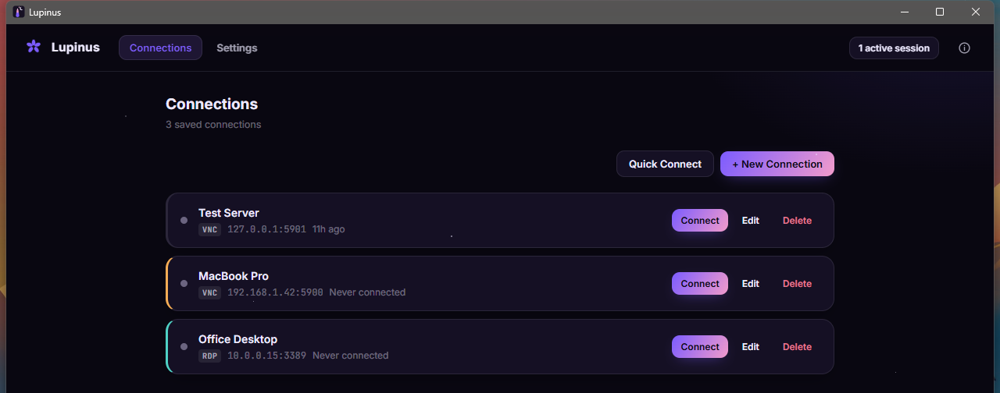
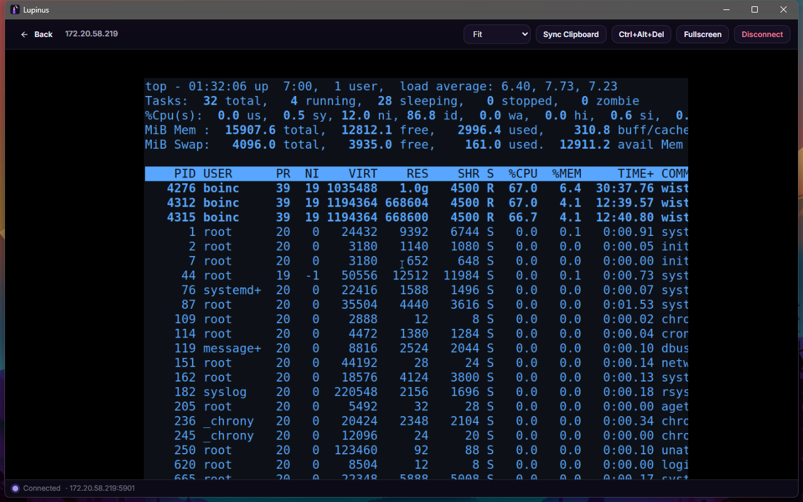

VNC et RDP dans une seule application
VNC avec les encodages Raw, CopyRect, ZRLE et Tight, et RDP avec connexion NLA et certificats TLS épinglés.
Connectez-vous à n'importe quelle machine VNC ou RDP — y compris le partage d'écran intégré d'un Mac — depuis une seule application native, légère et rapide. Pas d'onglet de navigateur, pas d'Electron.

VNC avec les encodages Raw, CopyRect, ZRLE et Tight, et RDP avec connexion NLA et certificats TLS épinglés.
Connectez-vous avec votre nom d'utilisateur et votre mot de passe Mac — aucun logiciel supplémentaire sur le Mac.
La profondeur de couleur s'adapte à votre connexion et seuls les pixels modifiés sont dessinés : même les sessions longue distance restent utilisables.
Gardez plusieurs machines ouvertes et passez de l'une à l'autre instantanément. Les connexions perdues se rétablissent seules.
Étiquettes de couleur, connexion rapide, import et export de vos connexions enregistrées.
Les mots de passe restent dans le trousseau de votre système, jamais dans un fichier de configuration.
Synchronisation du presse-papiers dans les deux sens, clavier complet et bouton Ctrl+Alt+Suppr.
38 langues, y compris les écritures de droite à gauche, choisies automatiquement.

Choisissez votre plateforme. Chaque version est produite par GitHub Actions et publiée avec ses sommes de contrôle.
Windows nécessite WebView2 (inclus dans l'installateur). Linux nécessite GTK 3 et WebKitGTK 4.1. Sommes de contrôle SHA-256
Lupinus est écrit en Go avec Wails et tout le code source est sur GitHub. Rapports de bogues, traductions et pull requests sont les bienvenus.